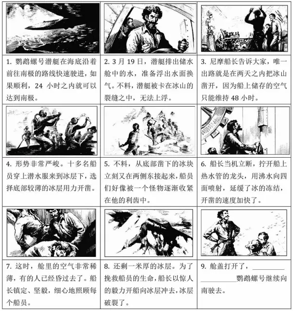

2016年北京市中考语文试题 · 名著阅读 第5、6、7题
三、名著阅读（共10分）
5．（2分）下面是《论语》中的九则语录，其中有论述学习的，有论述治国之道的，也有论述其他内容的。请你将论述学习和治国之道的语录分别都挑出来。（只填序号）
①子曰：“学而不思则罔，思而不学则殆。”
②子曰：“道千乘之国，敬事而信，节用而爱人，使民以时。”
③子曰：“君子周而不比，小人比而不周。”
④子曰：“不患人之不己知，患不知人也。”
⑤子曰：“温故而知新，可以为师矣”
⑥有子曰：“礼之用，和为贵。先王之道，斯为美。小大由之，有所不行。知和而和，不以礼节之，亦不可行也。”
⑦子曰：“为政以德，譬如北辰居其所而众星共之。”
⑧子曰：“由！诲女知之乎！知之为知之，不知为不知，是知也。
⑨子曰：“巧言令色，鲜矣仁。”
论述学习的语录：
论述治国之道的语录： 。
6．（3分）《朝花夕拾》是鲁迅的一部回忆性散文集，其中有些作品记录了他童年和少年时期的生活，在这些作品中，鲁迅描写了给他留下深刻印象的人物，如《阿长与＜三海经＞》中的阿长，《从百草屋到三味书屋》中的 ，又如《 》中的 。
7．（5分）阅读下面的连环画，完成问题。

（1）连环画讲述的是鹦鹉螺号潜艇在前往南极路上的一次遇险经历。从连环画的内容来看，当破冰遇到困难时，尼摩船长想到的解决办法是 ① 。在《海底两万里》一书中。尼摩船长拯救鹦鹉螺号或他人生命的事情还很多，比如在遇到 ② 的险情时，尼摩船长③ ，化险为夷。
（2）根据前8幅画的内容，为第9幅画补写一句话。